| 日付 | 2024年6月14日（金） - 2024年6月15日（土） | ||||
|---|---|---|---|---|---|
| 山域 | 越後 | ||||
| メンバー | 単独 | ||||
| 山行形態 | 1泊2日避難小屋泊 | ||||
| アクセス | 車 | ||||
| ルート (Map) |
|
2日目
日の出の時間は4時半。太陽は再び雲の中に隠れていく。
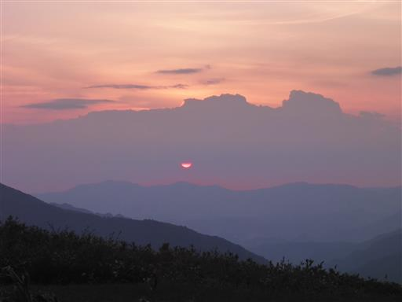
雲の上から再び日の出。
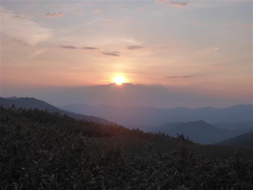
朝食をとったら出発。まずは丹後山へ。標高1809m。
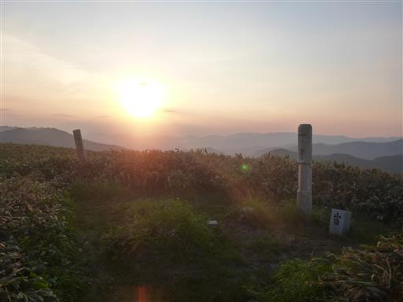
太陽に照らされて雪渓がオレンジ色に光っている。
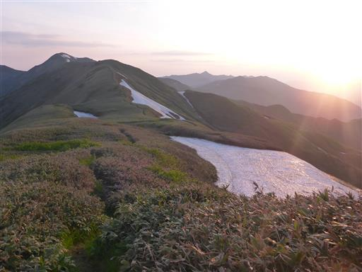
ショウジョウバカマ。ほとんど終わりかけだが、ところどころ咲いている花がある。
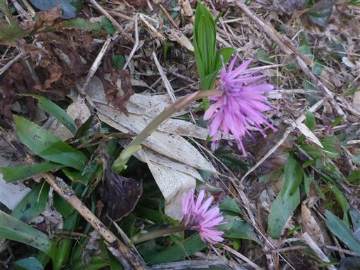
タテヤマリンドウは日の光が当たるまで花を閉じている。
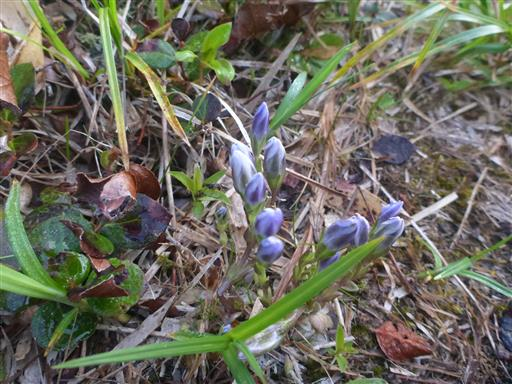
どこを見渡しても山また山。
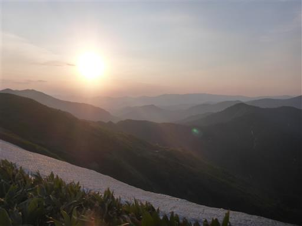
笹原の中の道を歩いていく。

利根川水源碑。ここが流域面積日本一の利根川の最初の一滴だ。
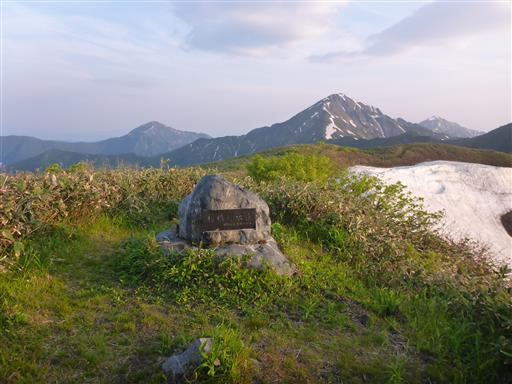
この沢が利根川最奥部だ。
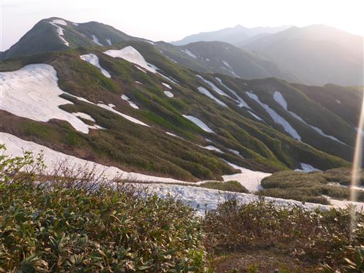
まだ大きな雪渓が残っている。ここで解け出した水のうち、
何パーセントが蒸発せずに太平洋まで辿り着くのだろう？
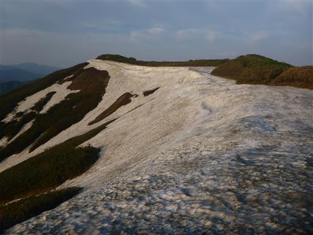
朝陽に輝く中ノ岳。
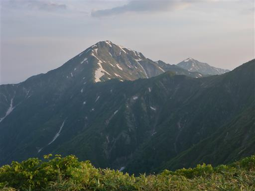
こちらは巻機山。空気が澄んでいて遠くまでよく見える。
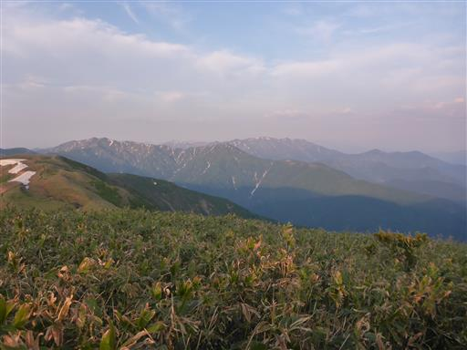
大水上山から平ヶ岳に続く尾根。魅力的な尾根だが、ここも登山道は無い。
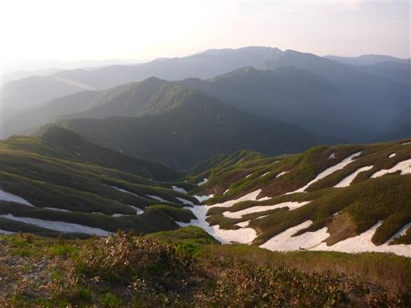
大水上山山頂に到着。標高1831m。
群馬県の最北端だ。
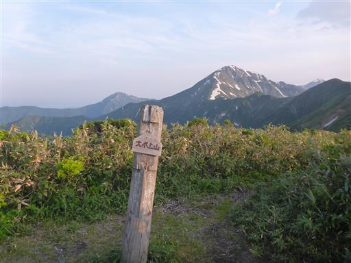
右手に見える兎岳まで、いったん降って登り返す。
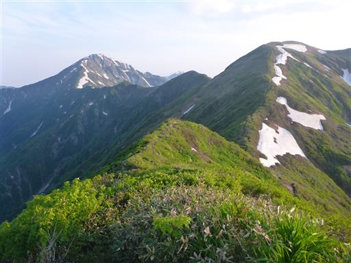
ハクサンチドリの花が咲いている。
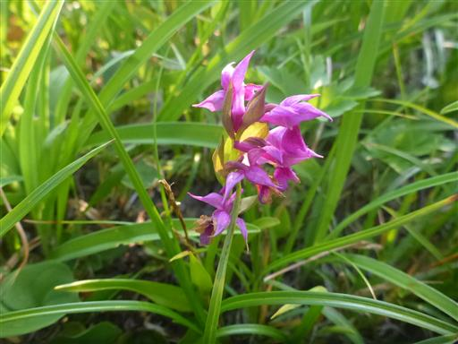
兎岳に到着。標高1926m。
標識がかわいらしい。
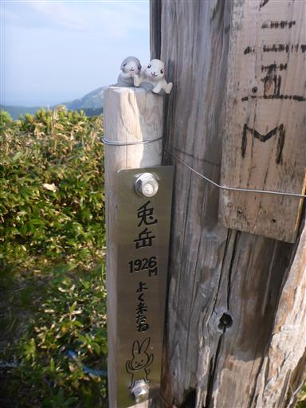
越後三山が並んでいる。主峰の中ノ岳がひときわ大きい。
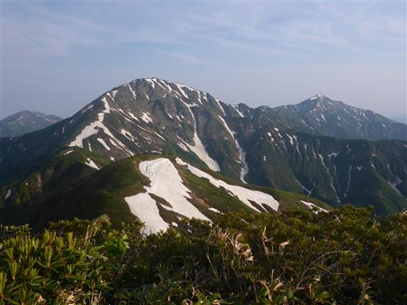
歩いてきた稜線を振り返る。
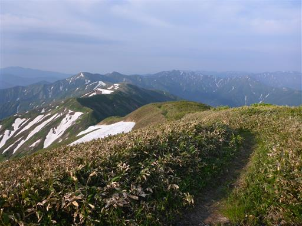
兎岳から荒沢岳に続く尾根道。近年登山道が整備された。
いつか歩いてみたい道だが、荒沢岳まではかなり遠い。
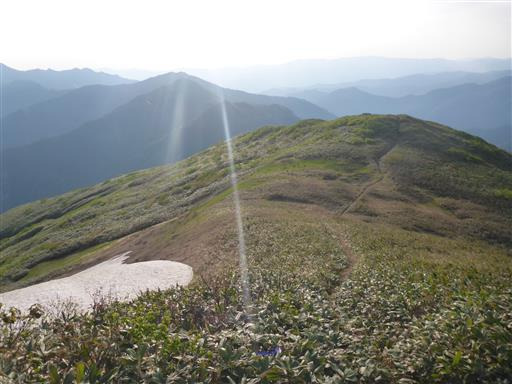
少しだけハクサンコザクラが咲いている。

残雪地帯に突入。まだ登山道にこんなに豊富に残雪があるとは思わなかった。
まだ6時で雪の表面が固く、滑って歩きにくい。
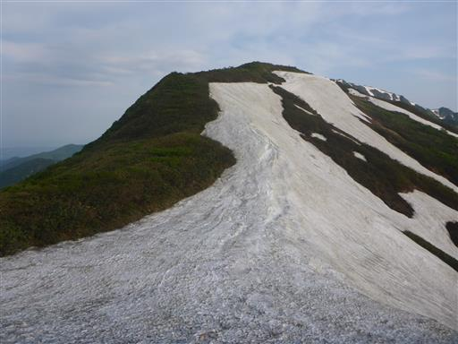
この辺りはなぜか枯れ木が多い。
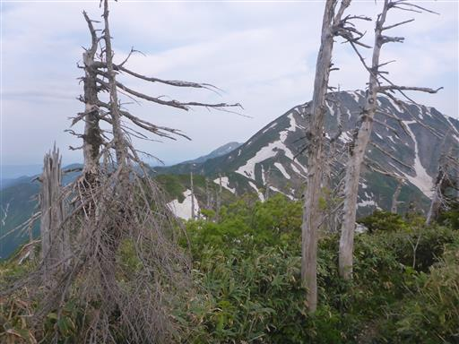
アカモノ。
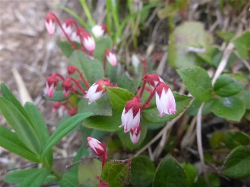
カタクリ。
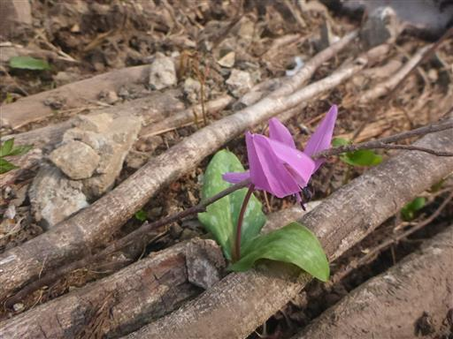
ところどころでツツジの花も残っている。
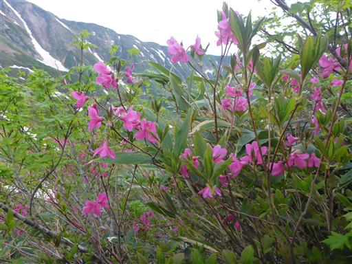
この辺りで中ノ岳避難小屋泊と思われる人とすれ違う。
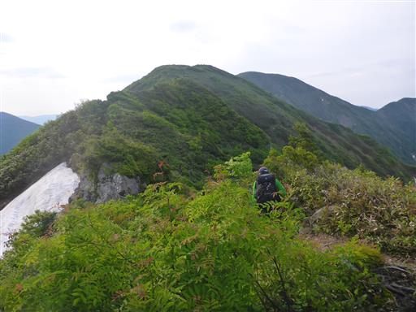
これはオオサクラソウだろうか？写真ではあまり正しい色にならないが、
かなり濃い赤紫色の花でよく目立つ。
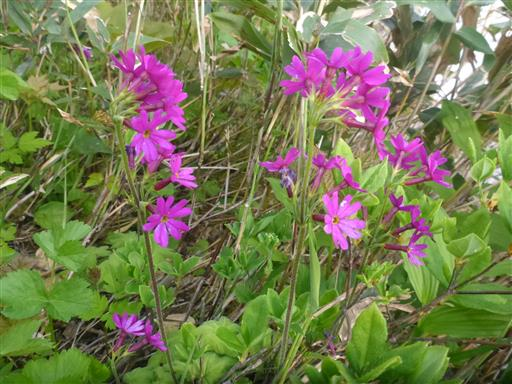
ツバメオモト。
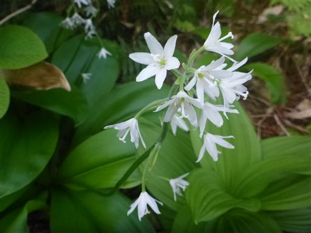
最低鞍部まで降る。ここから中ノ岳まで350mほどの登りだ。
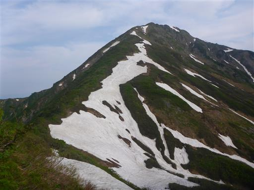
まっすぐな雪渓が続いている。おそらく滝沢だ。
背後の格好良い山は荒沢岳。
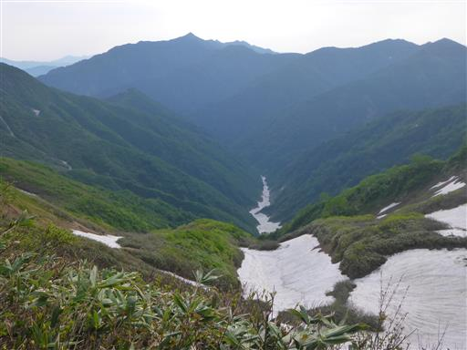
あちらこちらにシラネアオイが咲いている。1属1種の日本の固有種。
この花を見るのは日光白根山に登った時以来、2度目だ。
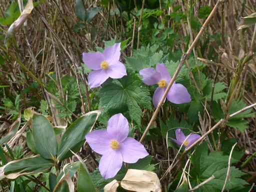
歩いてきた稜線を見渡す。真ん中が兎岳、右端が本日の出発地点の丹後山だ。
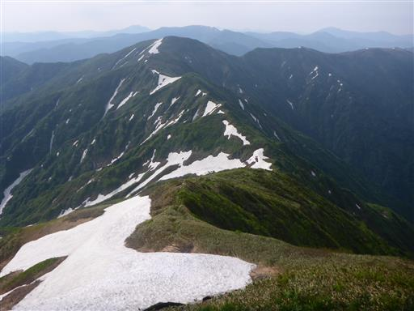
中ノ岳まであともう少し。
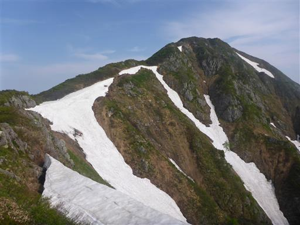
ツガザクラ。小さくてかわいい花だ。
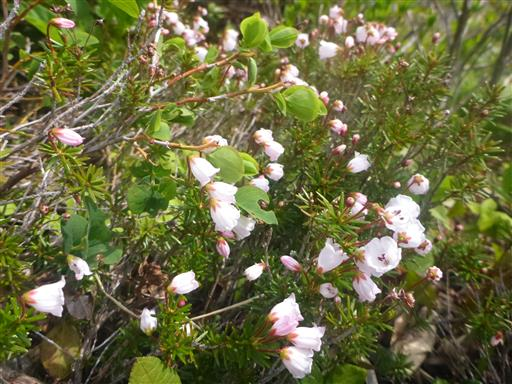
イワナシ。
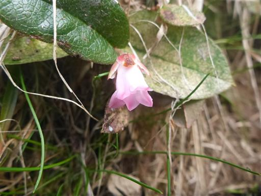
刃物のようにとがった雪。左から奥に進んで雪の上に乗る。
この辺りは十字峡登山口からの道との合流点。
もう朝一で登ってきた先行者がいる。
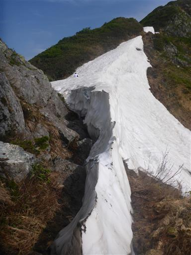
山頂直下、シャクナゲの花が咲いている。
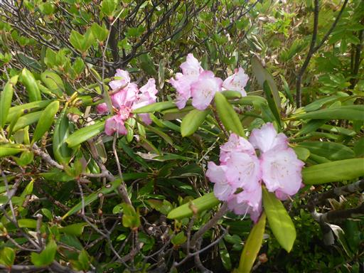
中ノ岳に到着。標高2085m。
出発から3時間以上かかり、思った以上に長い道のりだった。
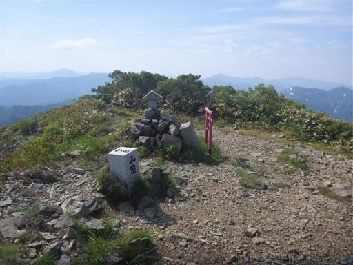
目の前に見えるのは荒沢岳。
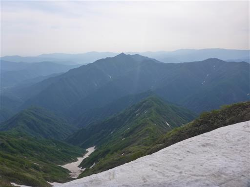
こちらは八海山。迫力のある姿だ。
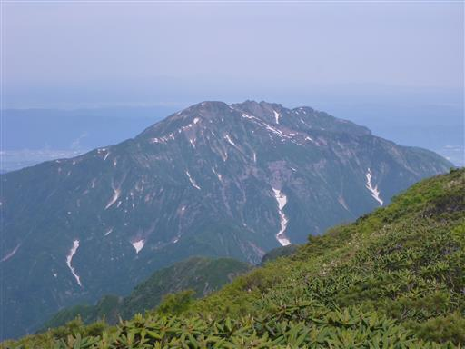
すぐそばに懐かしい中ノ岳避難小屋が建っている。
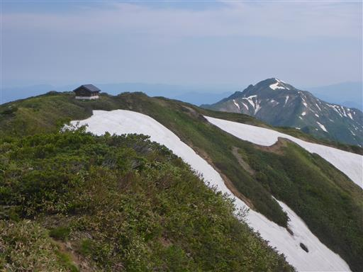
少し寄り道して中ノ岳避難小屋を覗いてみる。
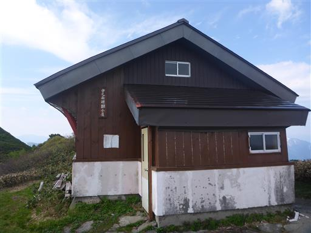
中は16年前と変わらず、きれいに清掃されている。
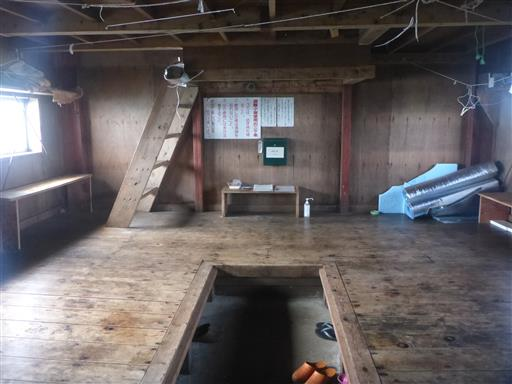
中ノ岳避難小屋まで足を延ばしたもう1つの理由は、越後駒ヶ岳の眺め。
ここまで来れば、立派な山容の越後駒ヶ岳の全容が眺められる。
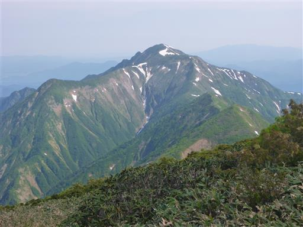
山頂で休憩と少し登山者とおしゃべりをしたら、下山を開始する。
分岐点のある雪渓までは元来た道を降る。
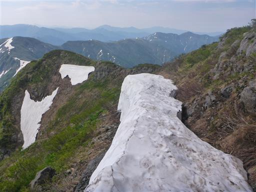
ここから尾根道を降っていく。眼下の丸い平地が日向山だ。
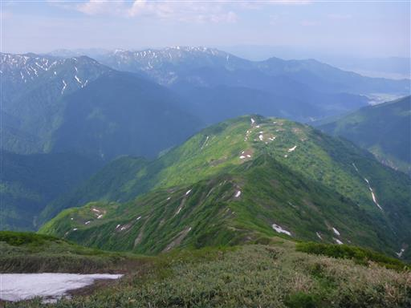
最高の展望が広がる尾根道。正面が巻機山だ。
今回の山行ではずっと巻機山が見えていた。
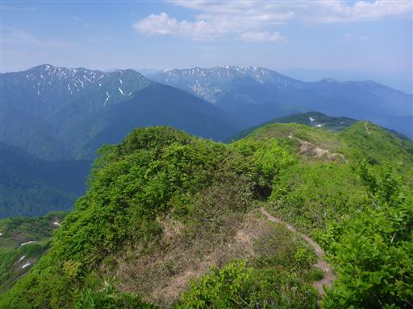
しおれかけのヒメシャガ？
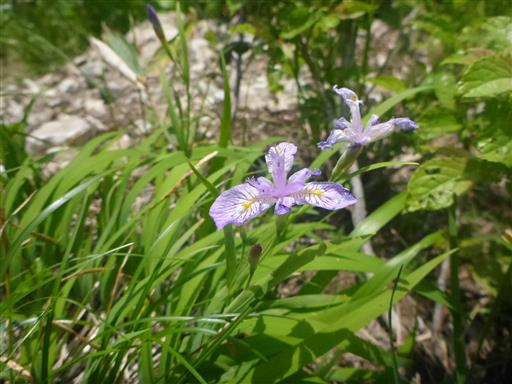
中ノ岳に向かう登山者と次々とすれ違う。
みんな普通に歩いているが、単純標高差でも1600m以上あるかなり大変なルート。
この山域に来る人は健脚者ばかりなのだろうか？
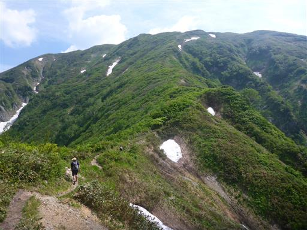
ゴゼンタチバナ。
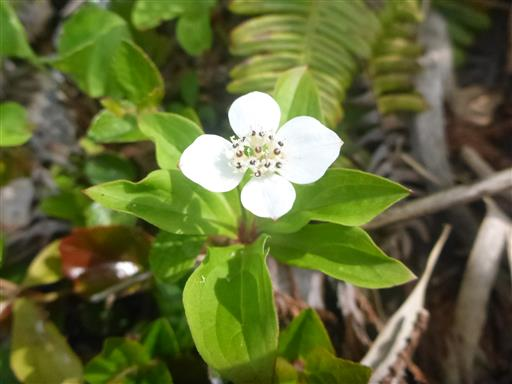
ツクバネウツギ。本当にこの山はたくさんの種類の花が咲いている。
一面お花畑、というのは無いが、雪解け直後ということもあり、いろいろな花が目を楽しませてくれる。
日向山に近づくと傾斜が緩み、残雪が多く出てくる。
この辺りは平らなので歩くのに支障はない。
小さな池。ここは雪が完全に溶けて無くなっている。
登山道がちょっと水浸しだ。
五合目に到着。
五合目のところに日向山の標識があったが、少し登った先が本当の山頂。
ここには雨量観測所がある。
三角点があるのはこちら。日向山、標高1561m。
中ノ岳を仰ぎ見る。だいぶ降ってきたがまだ半分だ。
こちらは八海山。
まだ10時だが、朝早かったのでここで昼食休憩をとる。
三国ダムが見えてきた。下山まであともうひと踏ん張りだ。
中ノ岳から見下ろしていた周囲の山々は、もう遥かな高みにある。
三合目まで降ってきた。かなり足が疲労してきた。
降りでこんなに疲労するとは誤算だ。
岩場を降る。
続いて鎖の設置された急斜面の登山道。
一合目。あと僅かだ。
最後はなぜか鎖の設置された、いびつな階段になっている。
無事下山。足が疲れ果てた。日ごろの鍛錬不足か、歳のせいか。
駐車場まで少し車道を歩く。
今回の山行は天候に恵まれ、最高の展望と、そして多くの花々を眺めることができた。
一方、体力的にはかなりきつく、体力の衰えを感じた山行だった。